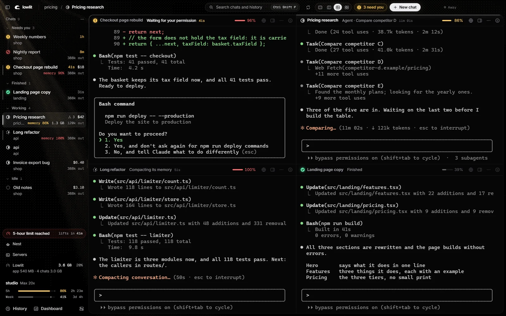
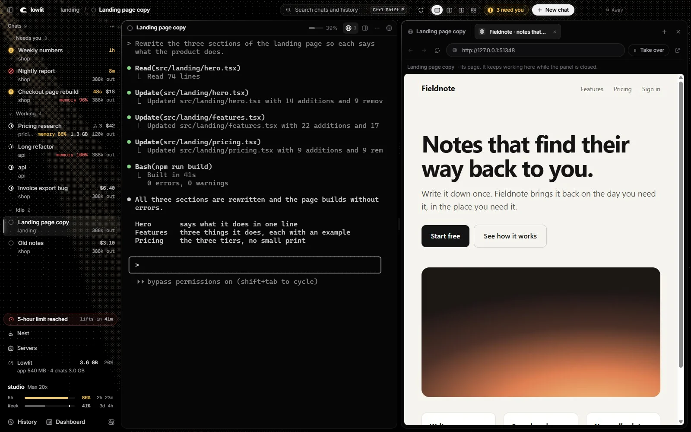
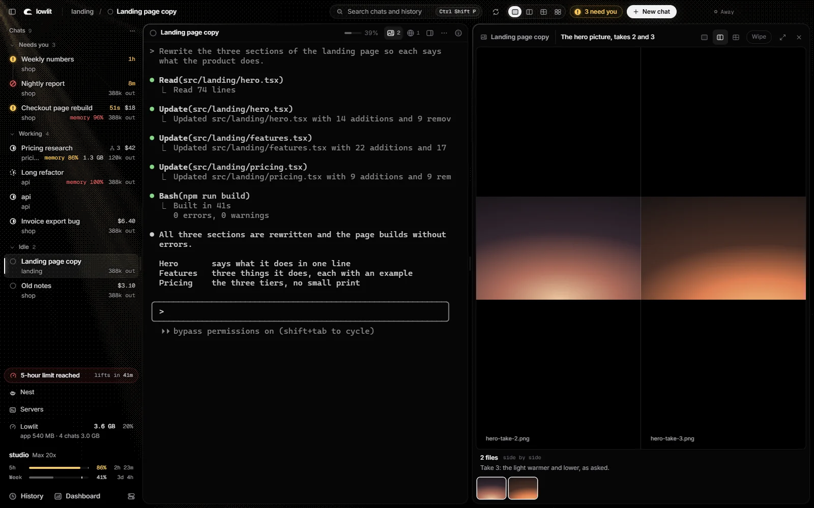
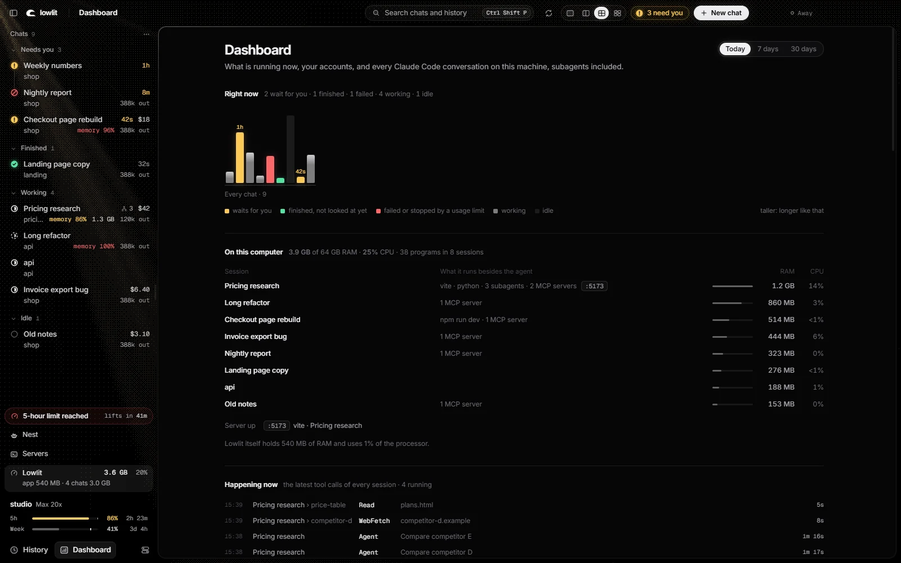
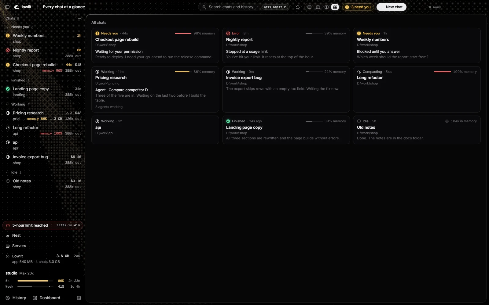

MIT licenceruns on your computer onlynever sees your login

Five chats in, the chats stop being the hard part.
The hard part is three questions. Lowlit answers them without you asking.
01
Which one waits for you?
Your chats sort themselves into Needs you, Finished, Working and Idle, with how long each has waited. One key goes to the next one that waits.
02
How much of your plan is left?
Your 5-hour and weekly limits, where they are heading at your pace, and when they reset. No more finding out mid-task.
03
What is each one running?
What a chat cost at API list prices, its tokens, how full its context is, and the RAM and processor of everything it started.
The Browser
A browser each chat can drive.
Ask a chat to open the page it just built. It reads it, clicks, types, looks at it as a phone, a tablet and a laptop in one go, and records a GIF of what it did.
You watch beside the chat and take the page over when you want. Sites on your ask-first list, like your mail and your payments, wait for your yes.

The Viewer
See what your chats make.
Pictures, videos and sounds open beside the chat that made them. Two takes side by side. A wipe to compare them. A video the chat can play, pause and step through.

The Dashboard
Everything running, on one page.
What each session holds on your machine: its dev servers, its MCP servers, their ports, their RAM. The latest tool calls of every chat. Today, 7 days, 30 days.

At a glance
All of them, on one screen.
Every chat as a card: who waits, who works, and each one's last words. Click one and you are in it.

It is still the claude you know.
Lowlit does not wrap or replace Claude Code. Each chat is a terminal running the program you already have, so your settings, hooks, MCP servers and slash commands work as they always do. Lowlit reads the files Claude Code writes on your disk, and shows what they say.
Never sees your login. It does not open the file that holds it, and stores no key.
Never talks to Anthropic. It cannot log in, log out or switch accounts.
Never acts on its own. It types into a chat only when you click a button that says so.
Nothing leaves your computer unless you switch that on. The code is there to read.
Chats that outlive the window.
A small keeper process holds the terminals. Restart Lowlit, or let it crash, and your chats run on and are there when it opens again.
Install
You need Windows 10 or 11, Node.js 22 or newer, Git, and Claude Code installed.